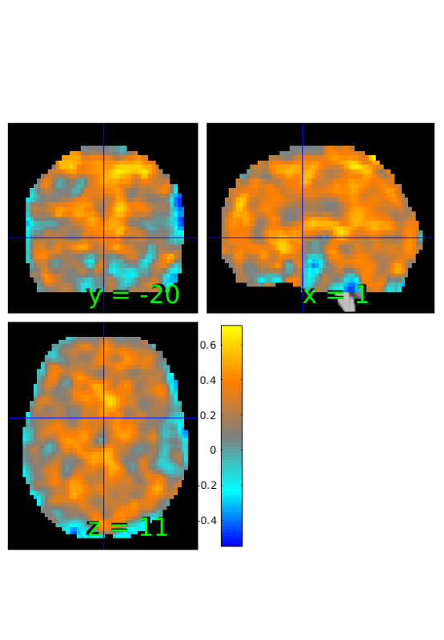

Bayes Factor Maps
In this example we use the estimateBayesFactor method, which converts statistic images to maps of (log) Bayes Factors. For now it works for t-maps, correlation maps, and maps of proportions (e.g., the number of subjects showing an effect). This walkthrough will show one example of all 3 of these types of maps.
The example uses the emotion regulation data provided with CANlab_Core_Tools. This dataset consists of a set of contrast images for 30 subjects from a first level analysis. The contrast is [reappraise neg vs. look neg], reappraisal of negative images vs. looking at matched negative images. These data were published in: Wager, T. D., Davidson, M. L., Hughes, B. L., Lindquist, M. A., Ochsner, K. N.. (2008). Prefrontal-subcortical pathways mediating successful emotion regulation. Neuron, 59, 1037-50.
Contents
- Load Emotion Regulation data
- Compute t-map for comparison of reappraise vs. look
- Compute map of Bayes Factors based on t-statistic and sample size
- Compute correlations between reappraise vs look and behavioral measure
- Compute map of Bayes Factors based on pearson correlations and sample size
- Compute proportion of subjects with greater activation during reappraisal
- Compute map of Bayes Factors based on proportion and sample size
Load Emotion Regulation data
% load fmri object for reappraise vs look image_obj=load_image_set('emotionreg'); % load text file with behavior behav_data=importdata(which('Wager_2008_emotionreg_behavioral_data.txt')); % store as single variable reappraisal_success=behav_data.data(:,2); image_obj.Y=reappraisal_success;
Loaded images: /home/lukie/CanlabCore/CanlabCore/Sample_datasets/Wager_et_al_2008_Neuron_EmotionReg/Wager_2008_emo_reg_vs_look_neg_contrast_images.nii /home/lukie/CanlabCore/CanlabCore/Sample_datasets/Wager_et_al_2008_Neuron_EmotionReg/Wager_2008_emo_reg_vs_look_neg_contrast_images.nii /home/lukie/CanlabCore/CanlabCore/Sample_datasets/Wager_et_al_2008_Neuron_EmotionReg/Wager_2008_emo_reg_vs_look_neg_contrast_images.nii /home/lukie/CanlabCore/CanlabCore/Sample_datasets/Wager_et_al_2008_Neuron_EmotionReg/Wager_2008_emo_reg_vs_look_neg_contrast_images.nii /home/lukie/CanlabCore/CanlabCore/Sample_datasets/Wager_et_al_2008_Neuron_EmotionReg/Wager_2008_emo_reg_vs_look_neg_contrast_images.nii /home/lukie/CanlabCore/CanlabCore/Sample_datasets/Wager_et_al_2008_Neuron_EmotionReg/Wager_2008_emo_reg_vs_look_neg_contrast_images.nii /home/lukie/CanlabCore/CanlabCore/Sample_datasets/Wager_et_al_2008_Neuron_EmotionReg/Wager_2008_emo_reg_vs_look_neg_contrast_images.nii /home/lukie/CanlabCore/CanlabCore/Sample_datasets/Wager_et_al_2008_Neuron_EmotionReg/Wager_2008_emo_reg_vs_look_neg_contrast_images.nii /home/lukie/CanlabCore/CanlabCore/Sample_datasets/Wager_et_al_2008_Neuron_EmotionReg/Wager_2008_emo_reg_vs_look_neg_contrast_images.nii /home/lukie/CanlabCore/CanlabCore/Sample_datasets/Wager_et_al_2008_Neuron_EmotionReg/Wager_2008_emo_reg_vs_look_neg_contrast_images.nii /home/lukie/CanlabCore/CanlabCore/Sample_datasets/Wager_et_al_2008_Neuron_EmotionReg/Wager_2008_emo_reg_vs_look_neg_contrast_images.nii /home/lukie/CanlabCore/CanlabCore/Sample_datasets/Wager_et_al_2008_Neuron_EmotionReg/Wager_2008_emo_reg_vs_look_neg_contrast_images.nii /home/lukie/CanlabCore/CanlabCore/Sample_datasets/Wager_et_al_2008_Neuron_EmotionReg/Wager_2008_emo_reg_vs_look_neg_contrast_images.nii /home/lukie/CanlabCore/CanlabCore/Sample_datasets/Wager_et_al_2008_Neuron_EmotionReg/Wager_2008_emo_reg_vs_look_neg_contrast_images.nii /home/lukie/CanlabCore/CanlabCore/Sample_datasets/Wager_et_al_2008_Neuron_EmotionReg/Wager_2008_emo_reg_vs_look_neg_contrast_images.nii /home/lukie/CanlabCore/CanlabCore/Sample_datasets/Wager_et_al_2008_Neuron_EmotionReg/Wager_2008_emo_reg_vs_look_neg_contrast_images.nii /home/lukie/CanlabCore/CanlabCore/Sample_datasets/Wager_et_al_2008_Neuron_EmotionReg/Wager_2008_emo_reg_vs_look_neg_contrast_images.nii /home/lukie/CanlabCore/CanlabCore/Sample_datasets/Wager_et_al_2008_Neuron_EmotionReg/Wager_2008_emo_reg_vs_look_neg_contrast_images.nii /home/lukie/CanlabCore/CanlabCore/Sample_datasets/Wager_et_al_2008_Neuron_EmotionReg/Wager_2008_emo_reg_vs_look_neg_contrast_images.nii /home/lukie/CanlabCore/CanlabCore/Sample_datasets/Wager_et_al_2008_Neuron_EmotionReg/Wager_2008_emo_reg_vs_look_neg_contrast_images.nii /home/lukie/CanlabCore/CanlabCore/Sample_datasets/Wager_et_al_2008_Neuron_EmotionReg/Wager_2008_emo_reg_vs_look_neg_contrast_images.nii /home/lukie/CanlabCore/CanlabCore/Sample_datasets/Wager_et_al_2008_Neuron_EmotionReg/Wager_2008_emo_reg_vs_look_neg_contrast_images.nii /home/lukie/CanlabCore/CanlabCore/Sample_datasets/Wager_et_al_2008_Neuron_EmotionReg/Wager_2008_emo_reg_vs_look_neg_contrast_images.nii /home/lukie/CanlabCore/CanlabCore/Sample_datasets/Wager_et_al_2008_Neuron_EmotionReg/Wager_2008_emo_reg_vs_look_neg_contrast_images.nii /home/lukie/CanlabCore/CanlabCore/Sample_datasets/Wager_et_al_2008_Neuron_EmotionReg/Wager_2008_emo_reg_vs_look_neg_contrast_images.nii /home/lukie/CanlabCore/CanlabCore/Sample_datasets/Wager_et_al_2008_Neuron_EmotionReg/Wager_2008_emo_reg_vs_look_neg_contrast_images.nii /home/lukie/CanlabCore/CanlabCore/Sample_datasets/Wager_et_al_2008_Neuron_EmotionReg/Wager_2008_emo_reg_vs_look_neg_contrast_images.nii /home/lukie/CanlabCore/CanlabCore/Sample_datasets/Wager_et_al_2008_Neuron_EmotionReg/Wager_2008_emo_reg_vs_look_neg_contrast_images.nii /home/lukie/CanlabCore/CanlabCore/Sample_datasets/Wager_et_al_2008_Neuron_EmotionReg/Wager_2008_emo_reg_vs_look_neg_contrast_images.nii /home/lukie/CanlabCore/CanlabCore/Sample_datasets/Wager_et_al_2008_Neuron_EmotionReg/Wager_2008_emo_reg_vs_look_neg_contrast_images.nii
Compute t-map for comparison of reappraise vs. look
t=ttest(image_obj); orthviews(t);
One-sample t-test
Calculating t-statistics and p-values
SPM12: spm_check_registration (v6245) 16:19:51 - 17/12/2018
========================================================================
Display <a href="matlab:spm_image('display','/home/lukie/CanlabCore/CanlabCore/canlab_canonical_brains/Canonical_brains_surfaces/keuken_2014_enhanced_for_underlay.img,1');">/home/lukie/CanlabCore/CanlabCore/canlab_canonical_brains/Canonical_brains_surfaces/keuken_2014_enhanced_for_underlay.img,1</a>
Warning: Function vecnorm has the same name as a MATLAB builtin. We suggest you
rename the function to avoid a potential name conflict.
Compute map of Bayes Factors based on t-statistic and sample size
% estimate BF BF_tstat=estimateBayesFactor(t,'t'); % threshold from -6 to 6 BF_tstat_th = threshold(BF_tstat, [-6 6], 'raw-outside'); % show results orthviews(BF_tstat_th);
Keeping vals outside of -6.000 to 6.000: 2174 voxels in .sig
SPM12: spm_check_registration (v6245) 16:20:21 - 17/12/2018
========================================================================
Display <a href="matlab:spm_image('display','/home/lukie/CanlabCore/CanlabCore/canlab_canonical_brains/Canonical_brains_surfaces/keuken_2014_enhanced_for_underlay.img,1');">/home/lukie/CanlabCore/CanlabCore/canlab_canonical_brains/Canonical_brains_surfaces/keuken_2014_enhanced_for_underlay.img,1</a>
Warning: Function vecnorm has the same name as a MATLAB builtin. We suggest you
rename the function to avoid a potential name conflict.
Compute correlations between reappraise vs look and behavioral measure
% initialize stats object from t-test output r=t; % replace data with simple correlation r.dat=corr(image_obj.dat',image_obj.Y); % show results orthviews(r);
SPM12: spm_check_registration (v6245) 16:20:22 - 17/12/2018
========================================================================
Display <a href="matlab:spm_image('display','/home/lukie/CanlabCore/CanlabCore/canlab_canonical_brains/Canonical_brains_surfaces/keuken_2014_enhanced_for_underlay.img,1');">/home/lukie/CanlabCore/CanlabCore/canlab_canonical_brains/Canonical_brains_surfaces/keuken_2014_enhanced_for_underlay.img,1</a>
Warning: Function vecnorm has the same name as a MATLAB builtin. We suggest you
rename the function to avoid a potential name conflict.
 Compute map of Bayes Factors based on pearson correlations and sample size
% estimate BF BF_correlation=estimateBayesFactor(r,'r'); % threshold from -6 to 6 BF_correlation_th = threshold(BF_correlation, [-6 6], 'raw-outside'); % show results orthviews(BF_correlation_th);
Keeping vals outside of -6.000 to 6.000: 273 voxels in .sig
SPM12: spm_check_registration (v6245) 16:20:49 - 17/12/2018
========================================================================
Display <a href="matlab:spm_image('display','/home/lukie/CanlabCore/CanlabCore/canlab_canonical_brains/Canonical_brains_surfaces/keuken_2014_enhanced_for_underlay.img,1');">/home/lukie/CanlabCore/CanlabCore/canlab_canonical_brains/Canonical_brains_surfaces/keuken_2014_enhanced_for_underlay.img,1</a>
Warning: Function vecnorm has the same name as a MATLAB builtin. We suggest you
rename the function to avoid a potential name conflict.
Compute proportion of subjects with greater activation during reappraisal
% initialize stats object from correlation output prop=r; % compute number of subjects with greater response in reappraisal prop.dat=sum(image_obj.dat'>0)'; %show results orthviews(prop);
SPM12: spm_check_registration (v6245) 16:20:50 - 17/12/2018
========================================================================
Display <a href="matlab:spm_image('display','/home/lukie/CanlabCore/CanlabCore/canlab_canonical_brains/Canonical_brains_surfaces/keuken_2014_enhanced_for_underlay.img,1');">/home/lukie/CanlabCore/CanlabCore/canlab_canonical_brains/Canonical_brains_surfaces/keuken_2014_enhanced_for_underlay.img,1</a>
Warning: Function vecnorm has the same name as a MATLAB builtin. We suggest you
rename the function to avoid a potential name conflict.
Compute map of Bayes Factors based on proportion and sample size
% estimate BF BF_prop=estimateBayesFactor(prop,'prop'); % thresholhd from -6 to 6 BF_prop_th = threshold(BF_prop, [-6 6], 'raw-outside'); % show results orthviews(BF_prop_th);
Keeping vals outside of -6.000 to 6.000: 2411 voxels in .sig
SPM12: spm_check_registration (v6245) 16:21:52 - 17/12/2018
========================================================================
Display <a href="matlab:spm_image('display','/home/lukie/CanlabCore/CanlabCore/canlab_canonical_brains/Canonical_brains_surfaces/keuken_2014_enhanced_for_underlay.img,1');">/home/lukie/CanlabCore/CanlabCore/canlab_canonical_brains/Canonical_brains_surfaces/keuken_2014_enhanced_for_underlay.img,1</a>
Warning: Function vecnorm has the same name as a MATLAB builtin. We suggest you
rename the function to avoid a potential name conflict.